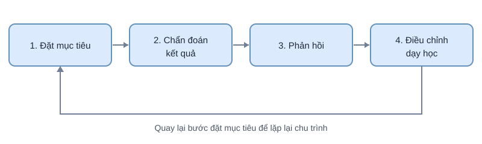

Hệ thống quản lý và phân tích quá trình học tập hỗ trợ giáo viên
Website giúp giáo viên quản lý lớp học, môn học, bài học, bài tập và bài kiểm tra. Dữ liệu về bài làm và điểm số được ghi nhận có cấu trúc, từ đó phân tích mức độ đạt mục tiêu học tập của từng học sinh và của cả lớp.

Mục đích
Hệ thống được xây dựng để giảm thời gian giáo viên phải ghi chép điểm số thủ công và để cung cấp thông tin cụ thể hơn về việc học sinh đã đạt những mục tiêu nào. Nhờ đó, giáo viên có thể điều chỉnh nội dung dạy học đúng lúc.
Chức năng nổi bật
Quản lý học tập
Giáo viên tạo lớp, phân công môn học, soạn bài học và tải tài liệu lên hệ thống. Học sinh xem bài học, làm bài và nộp bài theo thời hạn.
Theo dõi kết quả
Hệ thống ghi nhận điểm thường xuyên, điểm giữa kỳ và cuối kỳ, đồng thời lưu nhận xét của giáo viên để học sinh xem lại.
Phân tích mục tiêu học tập
Mỗi câu hỏi được gắn với một hoặc nhiều mục tiêu học tập. Giáo viên biết được nội dung nào có nhiều học sinh chưa đạt và cần củng cố.